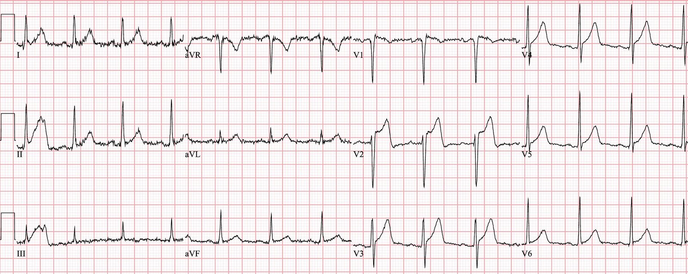
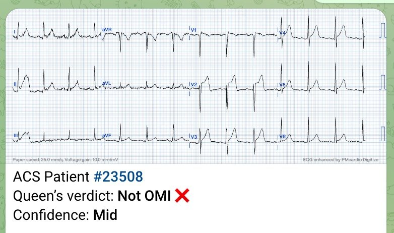
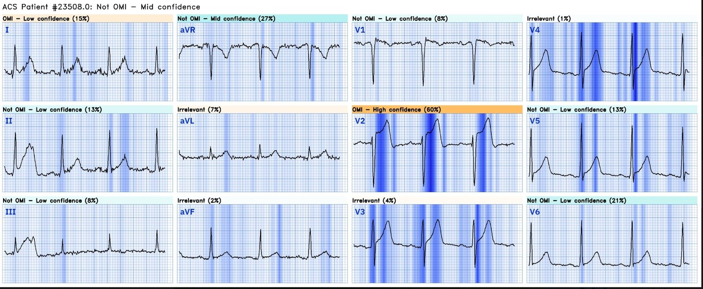
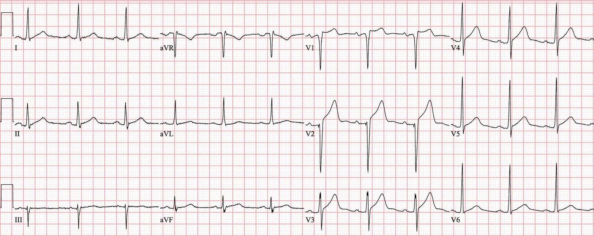
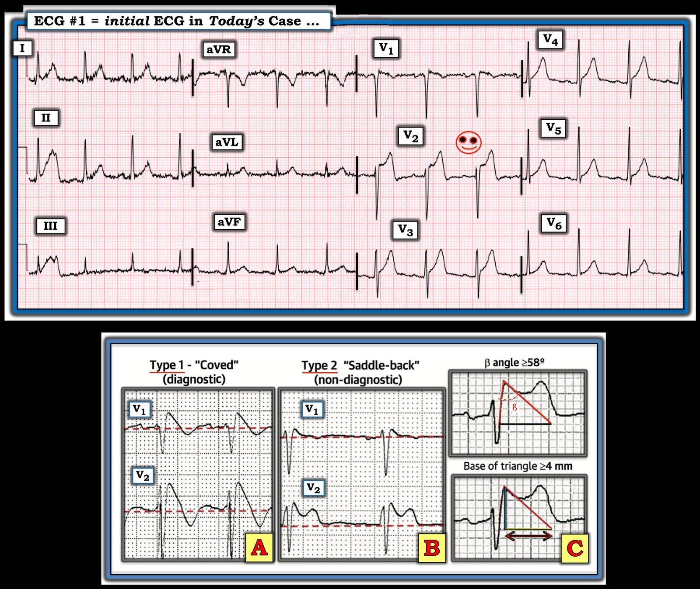

29/01/2024 — Bệnh nhân ngoài 40 tuổi bị đau ngực
Bản dịch tiếng Việt của bài "A 40-something with chest pain" – Dr. Smith’s ECG Blog. Giữ nguyên toàn bộ 6 hình ảnh của bản gốc.
Ca này do Sam Ghali @EM_RESUS gửi
Một người đàn ông 44 tuổi đến khám vì đau ngực
Kỹ thuật viên chạy đến với điện tâm đồ khi máy tính báo “STEMI!”


Thuật toán máy tính thông thường đọc: ***STEMI***
Kết quả đọc lại (overread) của bác sĩ tim mạch là: “ST chênh lên. Cân nhắc tổn thương trước bên hoặc nhồi máu cấp”
Bạn nghĩ sao?
Sam gửi ca này cho tôi và hỏi: “Anh nghĩ sao, Steve?”
Câu trả lời của tôi:
–Ca khó!
–Nhưng tôi sẽ liều mình mà nói rằng “Không phải OMI”
–ST chênh lên (STE) ở V2 có hình dạng gần như “yên ngựa” (saddleback), và đó là một dấu hiệu của STE dương tính giả.
–Cho tôi biết kết cục nhé!
Anh ấy trả lời:
–Anh đoán trúng rồi!
–Hình yên ngựa ở V2 chính là điều khiến tôi nghi ngờ. (Tôi học được điều đó từ anh!)
–Tôi cũng có lợi thế là có các điện tâm đồ cũ của anh này, trên đó ở trạng thái nền anh ta đã có các sóng T “tối cấp” (Hyperacute) rất đáng lo ngại!
“Tôi đã hoài nghi vì hình yên ngựa. Sau đó tôi xem các điện tâm đồ trước đây và gần như hoàn toàn yên tâm. Vì vậy tôi đã ký xác nhận KHÔNG PHẢI STEMI và phân loại (triage) anh ấy là không cần nằm ở khu hồi sức (RESUS).”
Queen of Hearts nói gì?


Và đây là phần cô ấy giải thích lý do:


Lưu ý rằng Queen làm nổi bật phức bộ QRS có điện thế tương đối cao ở nhiều chuyển đạo. Queen biết rằng OMI không chỉ được chẩn đoán dựa vào ST chênh lên, mà đoạn ST và sóng T phải được đánh giá trong bối cảnh điện thế QRS.
BẠN CŨNG CÓ THỂ SỞ HỮU BOT AI PM Cardio!! (ỨNG DỤNG AI OMI CỦA PM CARDIO)
Nếu bạn muốn bot này giúp bạn chẩn đoán sớm OMI và cứu bệnh nhân cùng cơ tim của họ, bạn có thể đăng ký để nhận phiên bản beta sớm của bot tại đây.
https://share-eu1.hsforms.com/18cAH0ZK0RoiVG3RjC5dYdwfyfsg (biểu mẫu đăng ký nhận bản beta của bot)
Ca bệnh tiếp diễn
Điện tâm đồ trước đây trong hồ sơ:


Điện tâm đồ này khác ở V2, nhưng ủng hộ rằng điện tâm đồ ở trên là một hình ảnh giả (mimic).
Sam khẳng định nhận định của mình, vốn được củng cố bởi điện tâm đồ cũ này:
“Siêu âm tim tại giường nhanh cho thấy không có rối loạn vận động thành, và điều đó đã chốt lại vấn đề.”
“Sau đó Hs Trop T lúc 0 giờ + 1 giờ: cả hai đều bình thường [19 ng/L rồi 21 ng/L, (khoảng tham chiếu <22)]”
Thêm các ca hình yên ngựa:
Is this Septal STEMI/OMI? Many examples of Septal STEMI/OMI (Đây có phải STEMI/OMI vùng vách? Nhiều ví dụ về STEMI/OMI vùng vách)
What is this ST Elevation? (ST chênh lên này là gì?)
A man in his 50s with anterior ST elevation and a “tall T wave in V1” (Một người đàn ông ngoài 50 tuổi có ST chênh lên vùng trước và “sóng T cao ở V1”)
Epigastric pain, Syncope, and Saddleback ST Elevation (Đau thượng vị, ngất và ST chênh lên hình yên ngựa)
A 65 Year Old Man with Chest pain and Precordial ST Elevation (Một người đàn ông 65 tuổi bị đau ngực và ST chênh lên ở các chuyển đạo trước tim)
Non-Vagal Syncope and Saddleback Morphology in V2 (Ngất không do phế vị và hình thái yên ngựa ở V2)
Is this STEMI? Pattern Recognition is Key (Đây có phải STEMI? Nhận diện hình ảnh là mấu chốt)
RSR’ with ST elevation: is this Right Bundle Branch Block with STEMI? Type 2 Brugada? (RSR’ kèm ST chênh lên: đây có phải blốc nhánh phải kèm STEMI? Brugada típ 2?)
Why is there ST Elevation in lead V2? Think Lead Placement. (Vì sao có ST chênh lên ở chuyển đạo V2? Hãy nghĩ đến vị trí đặt điện cực.)
Hình yên ngựa ở V2 hiếm khi là OMI do LAD, nhưng vẫn có thể!
2 ca hình yên ngựa thực sự là OMI

===================================
BÌNH LUẬN CỦA TÔI, bởi KEN GRAUER, MD (29/1/2024):
===================================
Ca bệnh hôm nay của BS. Ghali và BS. Smith minh họa tình thế khó xử khi đánh giá ST chênh lên hình yên ngựa (saddleback) ở một hoặc nhiều chuyển đạo trước.
- “Tin tốt” — là phần lớn trường hợp, hình ảnh ST chênh lên hình yên ngựa với bề lõm hướng lên (tức là, hình dạng “mặt cười” — như minh họa trong Hình 1) — sẽ lành tính, và không phải do OMI thành trước cấp.
Như trong Bình luận của tôi ở bài đăng ngày 22 tháng Bảy năm 2023 trên Dr. Smith’s ECG Blog — Dù đã nhìn thấy bao nhiêu lần đi nữa các hình ảnh điện tâm đồ Brugada típ 1 và Brugada típ 2 — tôi vẫn thấy mình phải quay lại xem các hình ảnh mà tôi đưa vào Hình 1:
- Vì vậy tôi nghĩ có thể sẽ hữu ích nếu tìm hiểu kỹ hơn một chút điện tâm đồ ban đầu của ca hôm nay.


— B) Hình ảnh điện tâm đồ Brugada típ 2 (hình ảnh “yên ngựa”) — cho thấy ST chênh lên dạng lõm (concave-up) ≥0.5 mm (thường ≥2 mm) ở ≥1 chuyển đạo trước tim phải, theo sau là sóng T dương.
— C) Các tiêu chuẩn bổ sung để chẩn đoán Brugada típ 2 (PHÍA TRÊN: góc ß (ß-angle); PHÍA DƯỚI BÊN PHẢI: Có hình ảnh Brugada típ 2 nếu tại vị trí 5 mm bên dưới điểm cao nhất của r’ — đáy của tam giác được tạo thành là ≥4).
SUY NGHĨ CỦA TÔI về điện tâm đồ #1
Ở một bệnh nhân đau ngực (CP — Chest Pain) mới xuất hiện — mức ST chênh lên >3 mm thấy ở chuyển đạo V2 trên điện tâm đồ #1 rõ ràng là đáng lo ngại. Dù vậy, như BS. Ghali và BS. Smith đã nêu — hình dạng yên ngựa của đoạn ST chênh lên này rất thường là một dấu hiệu lành tính.
- Như gợi ý trong Hình 1 — hình dạng yên ngựa của ST chênh lên ở một hoặc nhiều chuyển đạo trước gợi ý hình ảnh Brugada típ 2. Như minh họa trong Ô C của Hình 1 — việc phân biệt giữa ST chênh lên dạng lõm (concave-up) lành tính với hình ảnh Brugada típ 2 được xác định dựa vào độ rộng của góc ß. Đáng tiếc là việc không có đoạn đi xuống tính từ điểm ST chênh lên trên điện tâm đồ #1 khiến không thể tính được góc ß.
- Dù vậy — bất kể hình thái sóng ST-T ở chuyển đạo V2 trên điện tâm đồ #1 có phải là hình ảnh Brugada típ 2 hay không — hình dạng của ST chênh lên ở chuyển đạo V2 là lõm hướng lên (hình dạng “mặt cười”) — vốn thường lành tính.
- Dù vậy — điều làm phức tạp việc đánh giá ý nghĩa tiềm tàng (hoặc sự thiếu ý nghĩa) của sóng ST-T chênh lên ở chuyển đạo V2 — chính là hình dạng của sóng ST-T ở chuyển đạo V1 trên điện tâm đồ #1. Thực tế có ST chênh lên nhẹ ở V1 — với đoạn đi xuống từ từ tới sóng T đảo ngược mức độ vừa phải. Hình ảnh này không khác mấy so với hình ảnh Brugada típ 1, ngoại trừ việc nó không có đủ mức ST chênh lên để đạt tiêu chuẩn Brugada típ 1. Vì vậy, tôi không thể loại trừ khả năng kiểu hình sao chép Brugada (Brugada Phenocopy) chỉ dựa trên một điện tâm đồ duy nhất này. Như chúng tôi đã bàn trong nhiều bài đăng trên Dr. Smith’s ECG Blog — kiểu hình sao chép Brugada không hiếm gặp khi đi kèm các bệnh lý nền khác, bao gồm cả nhồi máu (Xem Bình luận của tôi ở cuối trang trong bài đăng ngày 22 tháng Bảy năm 2023, cùng nhiều bài đăng khác).
- Dù đã nói như trên — tôi nghi ngờ rằng điện tâm đồ #1 có thể lành tính vì: i) Không có chuyển đạo ngực nào khác trông bất thường (Mức ST chênh lên dốc lên 1-2 mm mà chúng ta thấy ở chuyển đạo V3 là một dấu hiệu bình thường thường gặp); ii) Tăng tiến sóng R rất tốt (so với tình trạng mất sóng R thường gặp ở các chuyển đạo V2,V3 khi có OMI thành trước); và, iii) Không thấy dấu hiệu cấp tính nào ở các chuyển đạo chi. Dù đúng là ST chênh xuống soi gương ở các chuyển đạo dưới không phải lúc nào cũng thấy khi có OMI thành trước cấp — các thay đổi soi gương ở chuyển đạo chi thực sự dễ gặp hơn khi vị trí OMI do LAD nằm ở đoạn gần, như có thể được gợi ý qua việc V1 và V2 là 2 chuyển đạo ngực có bất thường đáng chú ý.
XIN NHẤN MẠNH: Cách tôi diễn giải điện tâm đồ #1 ở trên trong ca hôm nay chỉ dựa trên các đặc điểm điện tâm đồ của bản ghi này, khi chỉ biết rằng bệnh nhân đến khám vì đau ngực mới xuất hiện.
- Các thăm dò tiếp theo (vốn rõ ràng là cần thiết, xét mức ST chênh lên trên điện tâm đồ ban đầu hôm nay ở bệnh nhân đau ngực mới xuất hiện này) — sau đó đã xác nhận rằng điện tâm đồ #1 lành tính, và không gợi ý OMI cấp.